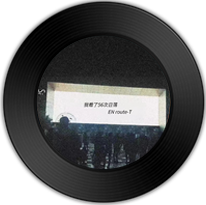

单曲
我看了五十六次日落
mayuko然:EN route-T
所属专辑:来年后·少年
播放
(39910)
(13247)
下载
(21572)
标签:
华语 流行 怀旧作词：AFMC黑子
作曲：AFMC黑子/嘉滢
编曲：Raspo
出品：青云LABx网易飓风
这有人说 风 轻的像雨
重的像磐石 听着像你
来年的冬 有 宾客上礼
满屋的酒气 又 听彻妄语
我怀念的凶 清澈的少年啊
肩上是 明月清风
白燕儿飞啊 飞到远处
会永远的在我 心中
所幸就如风 去 吹动这步棋
...
评论
共3214条评论

精彩评论

爱情的秋_:毋庸置疑。天份1551%，承蒙关照
2012年10月26日
 (123) |
回复
(123) |
回复
(123) |
回复

-_-老鱼:许巍有《蓝莲花》高梨康治有《红莲》翁大涵有《白莲》马琪龙有《青莲》
2021年11月23日
(43) |
回复
(43) |
回复

夜夜太平长安:《大千世界》如果你听懂了，一定会为它鼓掌，一定会为它爸爸鼓掌
2019年10月26日
(23) |
回复
(23) |
回复
相似歌曲
-
来年后·少年
by AFMC黑子/嘉滢
-
病态
by WYAN王毓千/杨胖雨
-
那么骄傲
by Bell玲惠
-
会呼吸的痛
by 林宝馨
-
达尔文·2022
by yihuik苡慧
包含这首歌的歌单
-

「纯音」嘘，我的悲伤才刚刚睡着
台湾歌手张惠妹 -

吴莫愁Momo
by 团战专用小火把 -

『欧美』精选76首极致冷门女毒
by ZellaDay -

【欧美治愈系】与过去和解，对世界温柔
by 帐号已注销 -

「居家古风」如何把生活过成诗
by 瘦茶